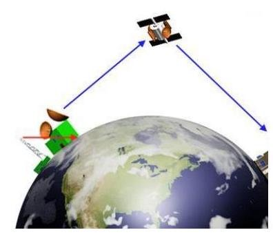

Viết lời giải đầy đủ. Bấm “Nộp để AI gợi ý điểm”: AI chấm gợi ý theo biểu điểm, giáo viên sẽ duyệt điểm chính thức.
1
Vận dụng
Một vệ tinh thông tin (vệ tinh địa tĩnh) chuyển động trên quỹ đạo tròn ngay phía trên xích đạo của Trái Đất, quay cùng hướng và cùng chu kì tự quay của Trái Đất ở độ cao $36600\text{ km}$ so với đài phát trên mặt đất. Đài phát nằm trên đường thẳng nối vệ tinh và tâm Trái Đất. Coi Trái Đất là một hình cầu có bán kính $R=6400\text{ km}$. Vệ tinh nhận sóng truyền hình từ đài phát rồi phát lại tức thời tín hiệu đó về Trái Đất. Biết sóng có bước sóng $\lambda=0,5\,m$; tốc độ truyền sóng $c=3\cdot10^{8}\,m/s$. Tính khoảng thời gian lớn nhất mà sóng truyền hình đi từ đài phát đến một điểm trên mặt Trái Đất, vẽ hình minh hoạ?

2
Vận dụng
(SBT - KNTT) Một vệ tinh địa tĩnh ở độ cao $36600\text{ km}$ so với một đài phát hình trên mặt đất, nằm trên đường thẳng nối vệ tinh và tâm Trái Đất. Coi Trái Đất là một hình cầu có bán kính $6400\text{ km}$. Vệ tinh nhận sóng truyền hình từ đài phát rồi phát lại tức thời tín hiệu đó về Trái Đất. Biết tốc độ truyền sóng $c=3\cdot10^{8}\,m/s$. Tính khoảng thời gian lớn nhất mà sóng truyền hình đi từ đài phát đến Trái Đất.
3
Vận dụng
(SBT - KNTT) Một anten radar phát ra những sóng điện từ đến vật đang chuyển động về phía radar. Thời gian từ lúc anten phát sóng đến lúc nhận sóng phản xạ từ vật trở lại là $80\ \mu s$. Sau hai phút, đo lần thứ hai, thời gian từ lúc phát đến lúc nhận lần này là $76\ \mu s$. Tính tốc độ trung bình của vật. Coi tốc độ của sóng điện từ trong không khí bằng $3\cdot10^{8}\,m/s$.
4
Vận dụng cao
(SBT - KNTT) Giả sử một vệ tinh truyền thông đang đứng yên so với mặt đất ở một độ cao xác định trong mặt phẳng xích đạo Trái Đất, đường thẳng nối vệ tinh với tâm Trái Đất đi qua kinh tuyến số 0 hoặc kinh tuyến gốc. Coi Trái Đất như một quả cầu bán kính $6400\text{ km}$, khối lượng là $6\cdot10^{24}\text{ kg}$ và chu kì quay quanh trục của nó là $24\,h$, hằng số hấp dẫn $G=6,67\cdot10^{-11}\text{ Nm}^{2}/\text{kg}^{2}$. Sóng cực ngắn ($f>30\text{ MHz}$) phát từ vệ tinh chuyển thẳng đến các điểm nằm trên xích đạo Trái Đất trong khoảng kinh độ nào?